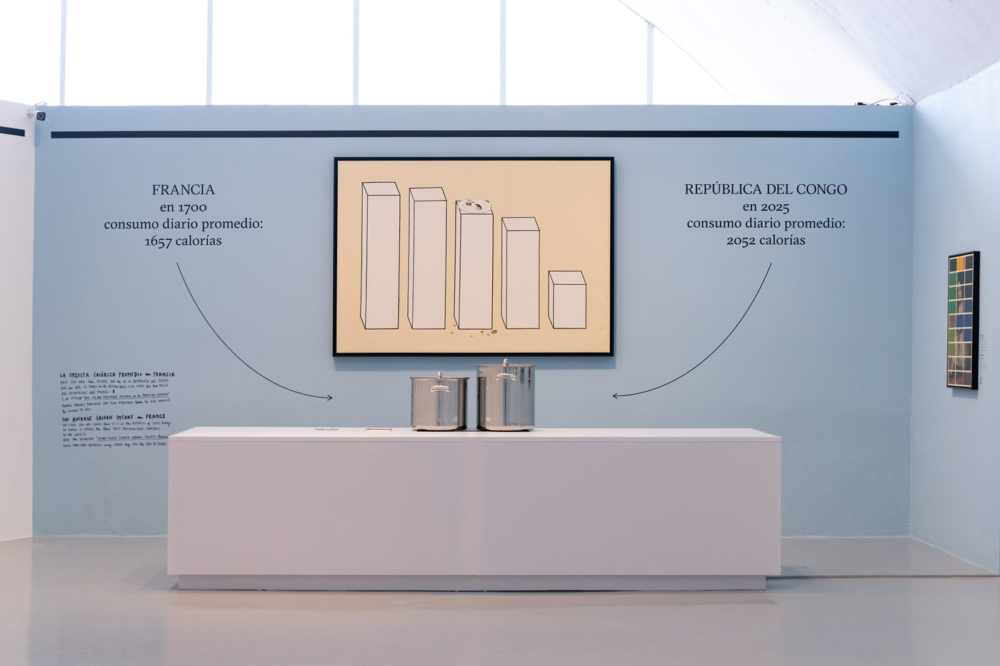
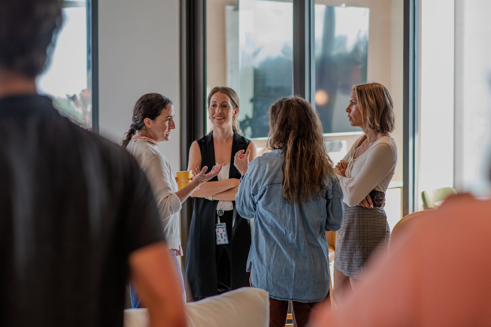
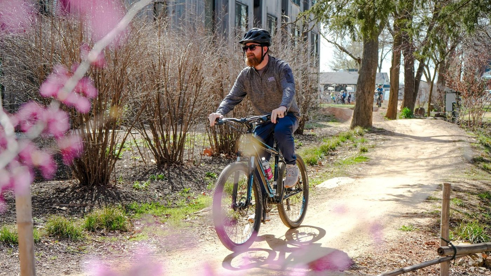

A Greater Bentonville Area Chamber of Commerce & Arkade Initiative
A structured commercialization platform bringing the world's most promising retail and supply chain technology companies to Northwest Arkansas — to land, to launch, and to stay.
Download the Concept Paper →Every major retail and supply chain technology company in the world wants access to this market. The question is whether Northwest Arkansas captures that interest — or concedes it to more organized ecosystems.

"Without a formalized landing pathway, interest does not consistently translate into presence."
Land + Launch NWA is an annual cohort-based commercialization program supporting 6–12 growth-stage retail technology and supply chain companies through a structured six-month market entry engagement. Led by the Greater Bentonville Area Chamber of Commerce. Delivered by Arkade.
Participating companies receive dedicated commercialization support, curated introductions to retailers, suppliers, and investors, physical workspace at Arkade, regulatory and relocation navigation, and full integration into the regional innovation ecosystem.
Structured soft-landing and commercialization programs are an established and growing category of regional economic development investment. NWA is not pioneering a new concept — it is catching up on a proven one.
NWA has everything these metros have — and in retail and supply chain, considerably more. What it has lacked is the infrastructure. Land + Launch NWA builds it.
Full Comparables Report →Every KPI is tied directly to grant activities and tracked through quarterly reporting to the Chamber. Full metrics and accountability framework are detailed in the Concept Paper.


Three-Year Catalytic Grant — Matched 1:1
Matched dollar-for-dollar by $1.25M in private and in-kind contributions from Arkade and the Chamber. Designed as catalytic funding, not permanent subsidy — with a structured taper toward earned revenue, corporate sponsorship, and long-term sustainability.